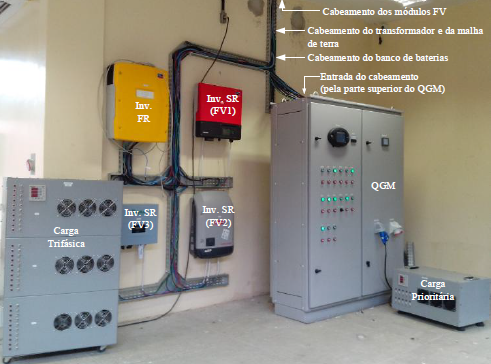

Instalações
Nossos pesquisadores têm acesso a instalações e equipamentos, incluindo:
- Relés de proteção digitais
- Switch de comunicação
- Mala de teste de relés
- Fonte de distúrbios trifásica de 30 kVA
- Fonte de distúrbios trifásica de 3 kVA
- Fonte cc emuladora de sistema solar fotovoltaico de 10 kW
- Registradores de distúrbios
- Cargas
- Microrrede com 3 sistemas solar fotovoltaicos de 2 kWp cada
- Bancada de gerador de indução de dupla alimentação de 10 kW com turbina eólica emulada
- Sala de simulação computacional
- GREI compartilha o suporte laboratorial do Grupo de Processamento de Energia e Controle-GPEC.
Paineis Fotovoltaicos que alimentam os inversores da microrrede.

Banco de Baterias integrantes da estrutura da microrrede.

Equipamentos de controle da microrrede como: quadro de comando, inversores e cargas trifásicas.
Sistema eólio-elétrico, parte interante da miccrorrede.
Bancada de testes para sistemas de automação da distribuição.
Diagrama esquemático da bancada de testes para sistemas de automação da distribuição.
Fonte programável MX30-3Pi para estudos de distúrbios elétricos relacionados à qualidade de energia.